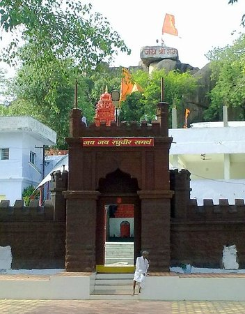
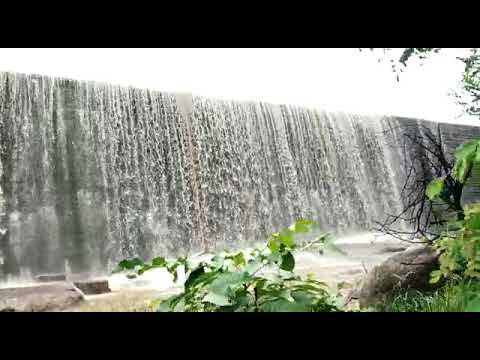
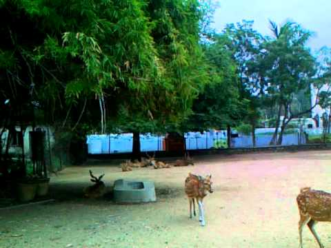
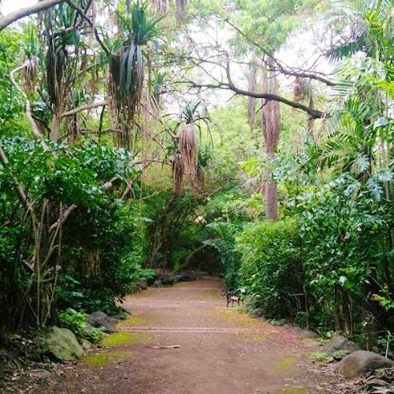

Tourism

Dichpally Ramalayam is a Lord Rama temple located in Nizamabad, Telangana built in 14th century by Kakatiya kings

It is believed that the Lord Hanuman gives mental and physical strength to the devotees visiting Sarangapur Temple. The temple is located on the hill top open area.
A garden is maintained by the temple and Goshala is also found in the temple premises.

The Sriram Sagar Project , also known as the Pochampadu Project is an Indian flood-flow project on the Godavari.
The Project is located in Nizamabad district, 3 km away from National Highway 44.
It has been described by The Hindu as a "lifeline for a large part of Telangana"

It is a perfect place in Nizamabad where we can enchant the nature and the envirenment. Mostly it remains uncrowded,
the winter views are quite astronishing.

Domakonda Fort is located in Domakonda village of Nizamabad district, Telangana.
It was built during 18th Century and it has an elevated compound of granite rocks that forms the fort wall, f
ollowed by a wooden door on an entrance door to the beautiful two-storied fort structure,
which consists of great stuccowork and is considered eye catchy even to this day.

One of the oldest gardens in Nizamabad. It had a deer sanctuary and also a small museum. Kids can enjoy their time playig in the rides whereas elderly people can relx in this peaceful environment

It is a complete woody and dense forest, home to migratory birds and animals.
The pristine surroundings, fresh air and chirping of birds, you may not ask for more!
A perfect surrounding that rejuvenates your energies away from the hustle-bustle of urban lifestyle,
it is a heritage structure that is conserved with care.